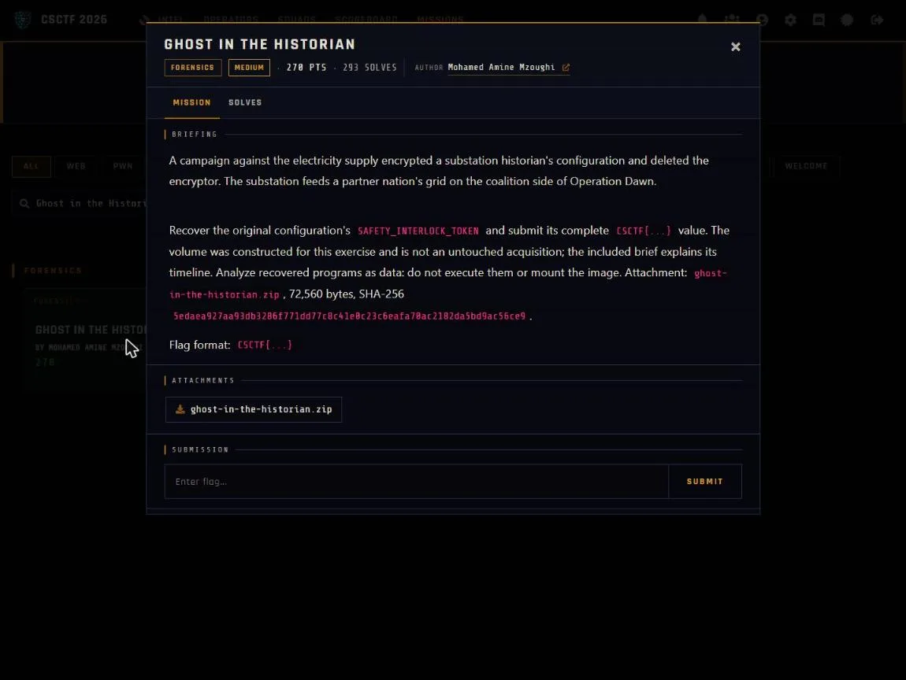

01Start point: open the image without mounting it
- What I found: evidence.vmdk is a monolithicFlat descriptor pointing at evidence-flat.vmdk, which is a raw ext4 filesystem at offset 0 (volume HISTORIAN01, 4096-byte blocks). I read it with debugfs (e2fsprogs), read-only, no mount.
- What I found: /var/historian holds three encrypted files (node_status.json.enc, grid_topology.cfg.enc, historian_cache.dat.enc). /var/log/historian.log says "historian_enc[2764964]: starting encryption sweep". Three deleted inodes exist but their block pointers are wiped and the journal has nothing to replay.
- Thinking: the challenge forbids mounting, and deleted inodes with wiped pointers mean the encryptor can only come back by carving raw blocks.
- Result: I know the files, the encryptor's pid (2764964), and that normal undelete will not work.

02Pivot: carve the deleted encryptor
- What I did: scanned the image for non-zero blocks (only 32 in the whole 64 MB) and mapped each to its owning inode.
- What I found: five blocks have no owner. One is the ransom note, four are a 64-bit ELF PIE.
- What I did: glued those four blocks back together to get the encryptor, never executed and analyzed with objdump as data.
- Thinking: with only 32 used blocks, the ownerless ones had to be the deleted files, and the ELF header told me which four belonged together.
- Result: the encryptor binary is recovered.
03Decrypt: reverse the cipher
- What I found: the per-word loop uses constant 0x9E3779B1 with rol h,5, a xorshift32 keystream. The seed is (time ^ pid) * 0x9E3779B1 mod 2^32, or 0xA5A5A5A5 when time == pid. For each 4-byte word s = xorshift32(s) (shifts 13, 17, 5), and the 4 little-endian bytes are XORed into the data.
- What I found: the encryptor keeps the state across files, processes them in scandir (alphabetical) order, utime()s each .enc to the sweep start time, then deletes the original.
- Thinking: each ciphertext's own mtime is the time in the seed, so the only unknowns are already on disk. All three mtimes are 0x6ABF2F51 (2026-10-02 12:13:05 UTC) and the pid is 2764964 from the log.
- Dead end: the challenge's ppm/offset flavour does not apply here; the seed is just time ^ pid.
- Result: seed = (0x6ABF2F51 ^ 2764964) * 0x9E3779B1.
04Result: decrypt in order and read the token
- What I did: reproduced the keystream and XORed the three files in alphabetical order with state carried across them.
- What I found: grid_topology.cfg decrypts to the config (Meridian Grid Authority, Historian Node 07, NODE_ID=MGA-HIST-07, CHECKSUM=pending-resync) containing SAFETY_INTERLOCK_TOKEN=CSCTF{xorshift_ghost_in_the_historian_d2c19434a637}. historian_cache.dat decrypts to two PRESS,OK readings and node_status.json to a nominal status for MGA-HIST-07.
- What I did: ran python solve.py evidence/ which prints all three decrypted files and the flag. The evidence folder holds the three .enc files and historian.log dumped from the image with debugfs; the full flat vmdk is the original handout and is not copied here for size.
- Thinking: readable plaintext in all three files confirms the order and seed are right.
- Result: CSCTF{xorshift_ghost_in_the_historian_d2c19434a637}